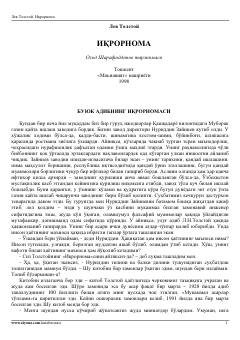

ILev Tolstoyning inson hayoti ma'nosi va ruhiy iztiroblari haqidagi mashhur e'tirofnomasi.
Ushbu asar buyuk rus adibi Lev Tolstoyning hayot ma'nosi, e'tiqod va ruhiy iztiroblari haqidagi fojiaviy va samimiy e'tirofnomasi hisoblanadi. Kitobda muallif o'z hayoti misolida insoniyatni asrlar davomida o'ylantirib kelgan o'tkir falsafiy va axloqiy savollarga javob izlaydi. Asar Ozod Sharafiddinov tarjimasida o'zbek kitobxonlariga taqdim etilgan.